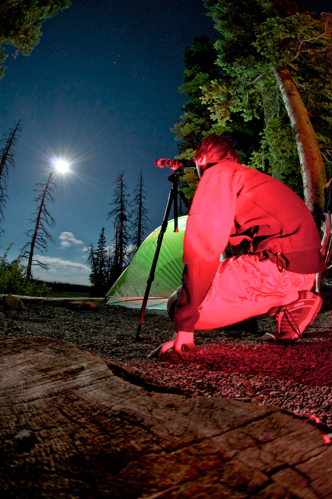

 |
陳 志均
University of Arizona
Websites:
Personal,
GitHub
CV: pdf |
I am an Assistant Astronomer at the Steward Observatory and a Data Science Fellow at the UA Data Science Institute. I focus on computational astrophysics and work with cutting edge technologies to advance both theoretical and observational research. I have developed new algorithms to study magnetohydrodynamic (MHD) turbulence, used graphics processing units (GPUs) to accelerate general relativistic ray tracing, designed cloud computing infrastructures to handle big observational data, and applied machine learning algorithms to speed up and automate data processing. Some of my active projects include simulating and understanding accretion disks, capturing images of black holes, and visualizing astrophysical simulations in virtual reality. A true wildcat, I received both my bachelors and doctoral degrees from the University of Arizona.